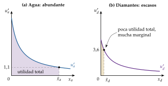
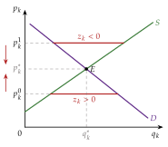
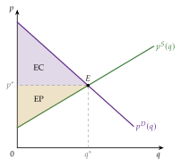
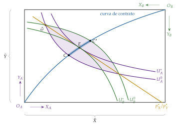

Tema 3.A.3
Los economistas neoclásicos.
Jevons, Menger, Walras y Marshall: utilidad marginal, escuelas de Cambridge, Lausana y Viena, equilibrio parcial, productividad marginal, Fisher y Pigou.
Exclusivo Material exclusivo de victorgutierrezmarcos.es y la app Oposición TCEE · DCE. Puedes usarlo libremente para tu estudio personal. No se autoriza su incorporación a otras plataformas, aplicaciones o servicios. Condiciones de uso.
Introducción
Enganche:
«Nadie sabe lo que vale el agua hasta que el pozo se seca», dice el refrán.1
Adam Smith se preguntaba por qué el agua, lo más útil que hay, apenas se puede cambiar por nada, mientras que por un diamante, que casi no tiene uso, se obtiene a menudo una cantidad enorme de otros bienes.
Con un valor que dependía del coste de producción, la paradoja del agua y los diamantes no tenía buena respuesta.
Entre 1871 y 1874, 3 economistas que no se conocían, en Manchester, Viena y Lausana, dieron la misma: lo que fija el valor de un bien no es su utilidad total, sino la de su última unidad, la utilidad marginal.2
Es lo que dice el refrán: mientras el pozo está lleno, un vaso más o menos apenas importa; cuando se seca, el último vaso vale una fortuna. El agua es la misma; lo que cambia es la escasez, y con ella el valor de la última unidad.
Detrás está la pregunta de esta exposición: ¿qué determina el valor de las cosas: lo que cuesta producirlas o lo que las valoramos?
Relevancia:
Para la teoría: la microeconomía que se estudia hoy está hecha con el análisis marginal de los neoclásicos: la demanda [ver tema 3.A.8], la producción y los costes [ver tema 3.A.11], los mercados [ver tema 3.A.16], el equilibrio general [ver tema 3.A.21] y la economía del bienestar [ver tema 3.A.22].
Para la política económica: los precios como señales de escasez, el excedente del consumidor en el análisis coste-beneficio, el impuesto pigouviano sobre las externalidades, que es lo que son los impuestos sobre el carbono [ver tema 3.A.23], y el tipo de interés natural de Wicksell, que los bancos centrales siguen estimando para orientar su política [ver tema 3.A.7] [ver tema 3.A.36].
Para el temario: es la teoría que Keynes llamará «clásica» y contra la que escribe la Teoría general [ver tema 3.A.4].
Además, como toda historia del pensamiento económico, enseña a no quedarse con el último manual y a ver por qué unas ideas llegan en unas épocas y no en otras: son 2 de los 4 motivos clásicos para estudiarla.3
Contextualización:
La historia del pensamiento económico avanza por revoluciones: un paradigma domina hasta que acumula anomalías que no sabe explicar y otro lo sustituye [ver tema 3.A.1]. Si la marginalista fue una revolución en ese sentido es discutible: la nueva teoría tardó unos 20 años en imponerse, más un proceso que un vuelco.
Los clásicos [ver tema 3.A.2], de Smith (1776) a John Stuart Mill (1848), explicaban el valor por el coste de producción, en último término por el trabajo, y estudiaban el crecimiento y el reparto de la renta entre las clases sociales (salarios, beneficios y rentas de la tierra). Mill daba la cuestión por cerrada: «felizmente, no queda nada en las leyes del valor que un escritor actual o futuro tenga que aclarar; la teoría está completa».
Quedaban, sin embargo, cabos sueltos:
la paradoja del agua y los diamantes;
los bienes que no se pueden reproducir (una estatua, un vino raro), cuyo valor depende solo de su escasez, como admitía el propio Ricardo (1817, cap. I, secc. I);
y una teoría del valor trabajo de la que Marx había sacado la explotación [ver tema 3.A.2].
El contexto económico también había cambiado. Es la segunda revolución industrial: entre 1870 y 1913 el PIB por habitante crece un 0,8 % al año en el Reino Unido, frente al 1,6 % de Alemania y el 1,75 % de Estados Unidos, que lo supera desde 1880. Lejos del estado estacionario que temían los clásicos, la pregunta urgente ya no es cómo crecer, sino cómo se asignan los recursos y se forman los precios.
Y la economía se hace profesión: en 1885 Alfred Marshall gana la cátedra de Cambridge y en 1890 impulsa la British Economic Association, que publica el Economic Journal desde 1891.
En 1871, William Stanley Jevons publica en Londres The Theory of Political Economy; ese mismo año, Carl Menger publica en Viena sus Grundsätze der Volkswirthschaftslehre, y en 1874 Léon Walras, francés que enseñaba en Lausana, la primera entrega de sus Éléments d’économie politique pure (la segunda es de 1877). Marshall sostuvo después que tenía estas ideas a finales de los años 60, aunque no publica sus Principles hasta 1890.
La revolución no se hace de una vez: se distinguen 3 etapas, que ordenan esta exposición:
la revolución marginalista (1871-1874): Jevons, Menger y Walras basan la teoría del intercambio en la utilidad marginal decreciente; con Marshall, que la consolida en 1890, es el bloque II;
el establecimiento de la teoría de la distribución según la productividad marginal (1890-1894): John Bates Clark, Philip Wicksteed y Knut Wicksell llevan el margen a la oferta y al reparto de la renta (III.1);
el resurgimiento paretiano (1934-1947): tras unas décadas en que la escuela pierde impulso, John Hicks, Harold Hotelling, Oskar Lange, Maurice Allais y Paul Samuelson la rehacen con la utilidad ordinal de Pareto y la nueva economía del bienestar (III.3).
Las 2 últimas etapas forman el bloque III; entre una y otra, Fisher, Wicksell, Edgeworth, Pareto y Pigou llevan el instrumental al interés, al dinero y al bienestar (III.2).
El análisis marginal lleva el centro de la disciplina a la microeconomía: a cómo asignan los mercados competitivos unos recursos escasos entre usos alternativos. Lo agregado no desaparece, pero queda en la teoría monetaria, separada de la del valor, y en la del ciclo.
La revolución marginalista rompe con el método, los conceptos y las teorías de los clásicos.
El nombre de neoclásicos lo pone Thorstein Veblen en 1900, para subrayar la continuidad de Marshall con los clásicos.4 Después, John Hicks y George Stigler (1941) lo extienden a todos los marginalistas, que es el sentido que usamos aquí; Keynes los llamará a todos «clásicos» [ver tema 3.A.4].
Problemática:
¿Qué cambia la revolución marginalista frente a los clásicos: la teoría del valor, el objeto o el método? ¿Fue de verdad una revolución?
¿Qué tienen en común las escuelas de Cambridge, Lausana y Viena, y qué las separa?
¿Cómo pasa el análisis marginal de la demanda a la producción y a la distribución de la renta?
¿Qué dijeron sobre el interés, el dinero y el bienestar?
¿Por qué la escuela pierde impulso a principios del siglo XX, cómo se rehace en los años 30 y qué queda hoy de su edificio?
Estructura:
La exposición sigue el orden en que se construyó la teoría, las 3 etapas, del valor y la demanda a la oferta, la distribución y el bienestar:
I. Caracterización general de la escuela neoclásica (I): quiénes forman la escuela, de dónde viene, cuándo se desarrolla y con qué método, y en qué se distinguen sus 3 escuelas;
II. Revolución marginalista (1871-1874) (II): la 1.ª etapa, con los 4 fundadores, Jevons, Menger, Walras y Marshall, de la utilidad marginal a las tijeras de la oferta y la demanda;
III. Productividad marginal y resurgimiento paretiano (III): la 2.ª etapa, en la que el margen llega a la producción y al reparto de la renta (Clark, Wicksteed, Wicksell); el interés, el dinero y el bienestar (Fisher, Edgeworth, Pareto, Pigou), y la 3.ª etapa, en la que Hicks, Lange, Allais y Samuelson rehacen la teoría con la utilidad ordinal y los teoremas del bienestar.
3.A.3. Los economistas neoclásicos
Introducción2′30″
I. Caracterización general de la escuela neoclásica4′
1. Caracterización general de la escuela neoclásica según Schumpeter
2. Autores y rango histórico
3. Método
II. Revolución marginalista (1871-1874)13′30″
1. William Stanley Jevons (1835-1882)
2. Carl Menger (1840-1921) y la escuela de Viena
3. Léon Walras (1834-1910) y la escuela de Lausana
4. Alfred Marshall (1842-1924) y la escuela de Cambridge
III. Productividad marginal y resurgimiento paretiano9′
1. Establecimiento de la teoría de la distribución de la productividad marginal (1890-1899)
2. Interés, dinero y bienestar
3. Resurgimiento paretiano (1934-1947)
Conclusión1′
Reparto del cante: introducción, 2′30″; I, 4′ (I.1, 1′; I.2, 1′30″; I.3, 1′30″); II, 13′30″ (II.1, 1′30″; II.2, 3′; II.3, 3′30″; II.4, 5′30″); III, 9′ (III.1, 3′; III.2, 3′; III.3, 3′), y conclusión, 1′. Las 3 etapas se dicen en la contextualización y ordenan los bloques II y III, como una línea del tiempo (1871-1874, 1890-1894, 1934-1947). Las cajas grises no se cantan. Marshall no baja de 5′30″ ni Walras de 3′30″: esta exposición es la de referencia de su equilibrio parcial y del origen del equilibrio general, y el tribunal espera ver las tijeras, el mercado de pescado y la ley de Walras. Las 3 escuelas de Cambridge, Lausana y Viena se presentan en el método (I.3) y vuelven con cada fundador. Además del refrán del enganche («nadie sabe lo que vale el agua hasta que el pozo se seca»), las pegatinas, cada una con su concepto: «lo poco agrada y lo mucho enfada» (la utilidad marginal decreciente), «cada loco con su tema» (la disputa sobre el método), «una mano lava la otra, y las dos, la cara» (las tijeras de Marshall), «más vale un toma que dos te daré» (la impaciencia y el interés) y «a cada cual lo suyo» (la productividad marginal de Clark). Los gráficos centrales son el agua y los diamantes, la tabla de Menger, el tanteo de Walras, las tijeras de Marshall con los excedentes, el mercado de pescado y la caja de Edgeworth-Pareto; el esquema de las 3 escuelas se presenta en el método y se completa con cada autor, y las 2 funciones clave son la segunda ley de Gossen y el agotamiento del producto. Lo que no se canta (los anexos, las notas y los párrafos de profundización) sirve para las preguntas del tribunal.
I. Caracterización general de la escuela neoclásica
Empezamos por la escuela en su conjunto: quiénes la forman, de dónde viene, cuándo se desarrolla y con qué método trabaja.
Conclusión anticipada: la escuela neoclásica no tiene un líder, sino 3 escuelas nacionales, Cambridge, Lausana y Viena, que comparten el valor subjetivo, el razonamiento en el margen y el equilibrio, y discrepan en el método: palabras o matemáticas, equilibrio parcial o general, estado de reposo o proceso.
I.1. Caracterización general de la escuela neoclásica según Schumpeter
Schumpeter reconoce una escuela de pensamiento por 3 rasgos: un líder, unos seguidores y un cuerpo doctrinal propio, con su objeto y su método. La escuela neoclásica tiene un cuerpo doctrinal común, pero no un solo líder: son varias escuelas nacionales.
Líderes: los 3 pioneros de la revolución marginalista, William Stanley Jevons, Carl Menger y Léon Walras, y Alfred Marshall. A Walras y a Marshall se les considera los padres de la economía neoclásica, porque son los que juntan la oferta y la demanda en un sistema.
Seguidores, por escuelas:
Cambridge, la neoclásica, no la postkeynesiana de los años 30 a 60 [ver tema 3.A.4]: Arthur Cecil Pigou, sucesor de Marshall en su cátedra, y, en Inglaterra, Francis Ysidro Edgeworth y Philip Wicksteed;
Lausana: Vilfredo Pareto, sucesor de Walras, y Enrico Barone;
Viena: Eugen von Böhm-Bawerk y Friedrich von Wieser y, en la generación siguiente, Ludwig von Mises y Friedrich Hayek;
fuera de las 3: Knut Wicksell, en Suecia, y John Bates Clark e Irving Fisher, en Estados Unidos.
Cuerpo doctrinal:
objeto: la asignación de recursos escasos entre usos alternativos y la formación de los precios relativos que la guían; la distribución de la renta pasa a ser un problema más de precios, los de los factores. Los clásicos estudiaban el crecimiento y el reparto entre clases: el objeto se estrecha y se vuelve estático. Robbins (1932) lo resumirá en su definición de la economía: la ciencia que estudia la conducta humana como relación entre fines y medios escasos que tienen usos alternativos. En lo agregado, aceptan la ley de Say de los clásicos: con precios y salarios flexibles, los mercados se vacían [ver tema 3.A.4];
método: el individuo que optimiza en el margen y el equilibrio; las diferencias entre escuelas, en el método (I.3).
| Rasgo | Clásicos [ver tema 3.A.2] | Neoclásicos |
|---|---|---|
| Pregunta | El crecimiento a largo plazo y el reparto de la renta | La asignación de recursos escasos y los precios relativos |
| Sujeto | Las clases sociales: trabajadores, capitalistas y terratenientes | El individuo que optimiza: el consumidor y la empresa |
| Valor | Objetivo: el coste de producción, en último término el trabajo | Subjetivo: la utilidad marginal y, con Walras y Marshall, la oferta y la demanda a la vez |
| Distribución | Entre clases; el beneficio, como residuo | Entre factores: cada uno cobra su productividad marginal |
| Método | Verbal y deductivo; economía política, con las instituciones dentro | Análisis marginal y equilibrio, con matemáticas en Lausana y, en notas, en Cambridge; sin ellas en Viena |
| Política | Laissez-faire y libre cambio | En general, también; pero el Estado puede corregir los fallos del mercado (Pigou) |
Fuente: elaboración propia a partir de Robbins (1932). En azul, lo que cambia.
I.2. Autores y rango histórico
El marginalismo tiene precursores y una fecha de nacimiento, la de la revolución de 1871-1874; las 3 etapas de su desarrollo, presentadas en la introducción, ordenan los bloques II y III.
I.2.1. Precursores del marginalismo
De los clásicos toman los rendimientos decrecientes de Turgot, la renta diferencial de Ricardo (1817), que ya es un razonamiento en el margen aplicado a la tierra, el método deductivo y unos mercados en libre competencia.
Aproximaciones pioneras a la utilidad marginal: antes de 1871, varios autores razonan ya con la utilidad, la capacidad de los bienes de satisfacer necesidades, aunque de forma incompleta o sin sacarle partido para la teoría de los precios:5
Daniel Bernoulli (1738) usa una utilidad marginal decreciente del dinero para resolver la paradoja de San Petersburgo: nadie pagaría una fortuna por un juego cuya ganancia esperada es infinita [ver tema 3.A.10].
Antoine Augustin Cournot (1838) escribe la demanda como una función del precio, \(D=F(p)\), y dibuja la demanda y la oferta en el plano precio-cantidad; Karl Heinrich Rau (1841) y Fleeming Jenkin (1870) dibujan ya el cruce de las 2 curvas.6
Jules Dupuit (1844), ingeniero de puentes, relaciona la demanda con la utilidad del consumidor y mide con el excedente del consumidor lo que vale una obra pública [ver tema 3.A.16].
Johann Heinrich von Thünen formula en 1850, en el 2.º volumen de Der isolirte Staat, el pago de los factores según su productividad marginal: es el germen de la teoría de la distribución de la segunda generación (III.1).
Hermann Heinrich Gossen (1854) formula sus 2 leyes:
Ley de la saturación de las necesidades: la utilidad de cada unidad adicional de un bien disminuye conforme aumenta la cantidad disponible, hasta llegar a la saciedad (utilidad marginal decreciente). Es lo que dice el refrán: «lo poco agrada y lo mucho enfada».
Ley de la igualdad de las utilidades marginales ponderadas: el individuo reparte su renta de modo que la última unidad monetaria gastada en cada bien le reporte la misma utilidad, con \(U_i\) la utilidad marginal del bien \(i\) y \(\lambda\) la de la renta [ver tema 3.A.8]:
\[\frac{U_1}{p_1}=\frac{U_2}{p_2}=\dots=\frac{U_n}{p_n}=\lambda\tag{1}\]
Algunos manuales añaden una tercera, la ley de la escasez (un bien solo tiene valor si es escaso), que Gossen no formula como tal.7
Más precursores: el valor por la utilidad y la escasez antes de 1871
La escuela de Salamanca: en el siglo XVI, teólogos como Diego de Covarrubias y Martín de Azpilcueta explican el precio justo por la estimación común de los compradores y por la abundancia o escasez del bien, no por su coste, y Azpilcueta relaciona el valor del dinero con su cantidad. La escuela austriaca los reivindicará como antecedentes de su valor subjetivo.
La tradición francesa e italiana: Galiani (1751) y Étienne Bonnot de Condillac (1776) ya hacen depender el valor de la utilidad y de la rareza; los clásicos británicos dejaron esa línea en segundo plano.
La idea, por tanto, no era nueva: lo nuevo en 1871-1874 es razonar con la última unidad y convertirlo en el centro de una teoría de los precios.
I.2.2. La revolución marginalista (1871-1874): ideas comunes
Se suele llamar primera generación de marginalistas a Jevons, Menger y Walras: sus obras son casi simultáneas e independientes, y comparten 5 ideas:
el valor es subjetivo: depende de la importancia que cada individuo da a un bien para satisfacer sus necesidades, no del trabajo que lleva incorporado;
el valor se decide en el margen: lo fija la utilidad de la última unidad, que decrece con la cantidad y depende, por tanto, de la escasez, y no la utilidad total;
el principio equimarginal: el consumidor reparte su renta hasta igualar las utilidades marginales ponderadas por los precios, la segunda ley de Gossen (1);
la utilidad es cardinal para cada individuo, una magnitud que se puede sumar, pero no se compara entre personas;8
la oferta queda en segundo plano: el coste importa solo porque limita la cantidad que llega al mercado, y el valor de los factores se deriva del de los bienes que producen, y no al revés (II.2).
Los 3 usan el margen de forma distinta:
Jevons y Menger buscan cadenas causales sencillas: Jevons, en el hogar; Menger, en el hogar y en la producción;
Walras ve la interdependencia de todas las variables: para él, el margen es solo el primer peldaño de un sistema de equilibrio general.
Faltaba juntar las 2 hojas de la tijera. Marshall lo hace mercado a mercado, en equilibrio parcial, consciente de la interdependencia pero dejándola en segundo plano, y Walras, con todos los mercados a la vez. Con ellos, el precio lo determinan a la vez la oferta y la demanda, y se acaban el valor trabajo, el valor como coste de producción y la distribución como residuo de los clásicos.
I.3. Método
Una vez vistos los autores y sus fechas, pasamos a lo que los une y los separa: el método.
Lo común:
individualismo metodológico: los fenómenos sociales se explican por las decisiones de los individuos, no por las de las clases o los países;
análisis marginal: se decide comparando lo que se gana y lo que se pierde con una unidad más, y el problema económico se plantea como un problema de optimización;
equilibrio: el estado en que nadie quiere cambiar su decisión, al que tienden los mercados y con el que se explican los precios;
abstracción: modelos muy simplificados de hogares que maximizan la utilidad y empresas que maximizan el beneficio, con el método deductivo de los clásicos y el cálculo diferencial: en el texto en Lausana y, en notas, en Cambridge; sin él en Viena.
Lo que los separa: 3 preguntas de método, que contestan de forma distinta las 3 escuelas (tabla 2):
¿palabras o matemáticas?
¿un mercado o todos a la vez?
¿un estado de reposo o un proceso en el tiempo?
| Cambridge | Lausana | Viena | |
|---|---|---|---|
| Fundador | Marshall (1890) | Walras (1874) | Menger (1871) |
| Seguidores | Pigou; en Inglaterra, Edgeworth y Wicksteed | Pareto y Barone | Böhm-Bawerk y Wieser; después, Mises y Hayek |
| Método | Verbal, con las matemáticas en notas y apéndices; cerca de los hechos | Matemático: la economía pura, como la mecánica | Verbal y deductivo, a partir de la acción individual |
| Equilibrio | Parcial: un mercado, ceteris paribus, con plazos | General: todos los mercados a la vez | Proceso: el mercado como descubrimiento, no como estado de reposo |
| Valor | Utilidad y coste a la vez: las tijeras | Rareté y oferta y demanda de todos los bienes | Subjetivo; los factores, por imputación |
| Capital e interés | Cuasirrentas; la espera como coste | El capital, dentro del sistema de ecuaciones | Rodeos de producción y preferencia por el presente (Böhm-Bawerk) |
| Dinero | Saldos de caja: \(M^D=k\,P\,Y\) | El dinero, en la última etapa del sistema (la circulación) | Origen del dinero (Menger); dinero y ciclo (Mises, Hayek) |
| Bienestar | Excedente del consumidor; coste social y impuesto (Pigou) |
Máximo de satisfacción; óptimo de Pareto | Crítica del cálculo económico socialista |
| En la exposición | II.4 | II.3 | II.2 |
| Fuera de las 3: Wicksell, en Suecia, y Clark y Fisher, en Estados Unidos (III) | |||
Fuente: elaboración propia. En azul, el rasgo de método que distingue a cada escuela.
La disputa sobre el método: en 1883, Menger defiende la teoría abstracta frente a la escuela histórica alemana en sus Untersuchungen; Gustav von Schmoller, que quería una economía inductiva, construida desde la historia y las instituciones, responde con una reseña durísima, y Menger replica con Die Irrthümer des Historismus. Es la disputa sobre el método (Methodenstreit) [ver tema 3.A.1].
«Cada loco con su tema»: cada bando defendía su método como el único científico, y la disputa enconó durante años la economía en lengua alemana.
Los austriacos quedan como deductivos: parten de unos pocos principios de la acción humana, sin matemáticas, y en eso se distinguen tanto de los historicistas como de Walras.
Recapitulación: la escuela neoclásica tiene varios líderes y 3 escuelas que comparten el valor subjetivo, el margen y el equilibrio, y discrepan en el método. Estudiado el conjunto, pasamos a sus fundadores: los 3 de la revolución marginalista y Marshall, que la convierte en sistema.
II. Revolución marginalista (1871-1874)
Una vez caracterizada la escuela, pasamos a la 1.ª etapa, la revolución marginalista, con sus 4 fundadores, cada uno con la escuela que creó o en la que se apoyó: los 3 de 1871-1874 y Marshall, que la consolida en 1890.
Conclusión anticipada: entre 1871 y 1874 el valor pasa a depender de la utilidad marginal; Menger lo lleva a los factores y al tiempo, Walras a todos los mercados a la vez y, en 1890, Marshall une la utilidad y el coste en las tijeras de la oferta y la demanda.
II.1. William Stanley Jevons (1835-1882)
a) Contexto, método y obra
Contexto: químico y ensayador en la casa de la moneda de Sídney, lógico y estadístico, profesor en Manchester y en Londres. Antes de la Theory se había hecho famoso con The Coal Question.
Método: matemático y utilitarista. Para Jevons, la economía tiene que ser una ciencia matemática, porque trata de cantidades, y es un cálculo del placer y del dolor a la manera de Bentham.
b) La utilidad y el intercambio
La utilidad: es aditiva, la suma de las que dan los bienes por separado, y lo que cuenta es el grado final de utilidad, la utilidad marginal, que decrece: \[U(\vec{x})=u_1(x_1)+u_2(x_2)+\dots+u_n(x_n),\qquad U_i=u_i'(x_i),\quad u_i''(x_i)<0. \tag{2}\] Con esa forma, la utilidad marginal de un bien no depende de cuánto se tenga de los demás: no hay sustitutivos ni complementarios. El consumidor reparte su renta según la segunda ley de Gossen (1).
La paradoja del agua y los diamantes, resuelta: el agua da mucha más utilidad total, pero hay tanta que la última unidad vale poco; de los diamantes hay tan pocos que la última vale mucho, y es la marginal la que fija el precio (gráfico 1). Volvemos al refrán del principio: nadie sabe lo que vale el agua hasta que el pozo se seca, porque lo que vale es la última unidad, y su valor depende de cuánta agua quede. La escasez que cuenta es la que se desea, no la mera rareza (anexo B.2).

Fuente: elaboración propia a partir de Smith (1776, lib. I, cap. IV) y C. Menger (1871, cap. III). El área bajo cada curva hasta la cantidad disponible es la utilidad total; la altura en ese punto, la marginal, que es la que fija el precio. Curvas ilustrativas.
La ley de la indiferencia: «en un mismo mercado abierto, en un momento dado, no puede haber 2 precios para la misma clase de artículo». Es la ley del precio único, que le permite escribir la relación de intercambio como un cociente de precios.
El intercambio: 2 personas, \(A\) con el bien 1 y \(B\) con el bien 2, cambian hasta que la razón de intercambio, \(x_2/x_1\), iguala el cociente de las utilidades marginales de cada una (anexo A): \[\mathrm{RMS}^A_{12}=\frac{U^A_1}{U^A_2}=\frac{x_2}{x_1}=\frac{U^B_1}{U^B_2}=\mathrm{RMS}^B_{12}. \tag{3}\] Edgeworth mostrará que, con solo 2 personas, el resultado está indeterminado (III.2).
La cadena de Jevons: «el coste de producción determina la oferta; la oferta determina el grado final de utilidad; el grado final de utilidad determina el valor»; en la 1.ª edición lo decía en prosa. El coste importa, pero solo a través de la cantidad que llega al mercado.
El trabajo: se trabaja hasta que la penosidad de la última hora iguala la utilidad de lo que con ella se obtiene, el antecedente de la oferta de trabajo neoclásica [ver tema 3.A.25].
c) Otras aportaciones
Salarios y beneficios: niega que se muevan en sentido contrario; con un producto variable, esa doctrina es «radicalmente falaz», porque intenta despejar 2 incógnitas con una sola ecuación, y la teoría del fondo de salarios es «del todo ilusoria».
La paradoja de Jevons: usar el carbón con más eficiencia no reduce su consumo, lo aumenta, porque abarata su uso: «es una completa confusión de ideas suponer que el uso económico del combustible equivale a un menor consumo. Lo cierto es lo contrario». Es el efecto rebote de la economía de la energía.
El ciclo: atribuye las crisis comerciales a las manchas solares, que alterarían las cosechas y el precio del grano (memorias de 1875 y 1878, recogidas en Jevons (1884); (The History of Economic Thought Website, 2026h)): una teoría real del ciclo. Los equilibrios de manchas solares de Azariadis (1981) y Cass y Shell (1983) toman de ahí el nombre para algo distinto: una variable sin relación con los fundamentos que coordina las expectativas y elige entre varios equilibrios [ver tema 3.A.42].
d) Valoración
Jevons da la formulación matemática más clara de la utilidad marginal, pero su utilidad aditiva y su desinterés por la oferta dejan la teoría a medias: no explica qué determina el coste. Es lo que intentan, por caminos opuestos, Menger y sus discípulos.
II.2. Carl Menger (1840-1921) y la escuela de Viena
a) Contexto, método y obra
Contexto: periodista económico y funcionario en Viena, publica los Grundsätze en 1871 y en 1873 entra en la Universidad de Viena, donde forma la escuela austriaca.9
Método: deductivo y verbal, sin matemáticas, a partir de las necesidades de los individuos y de lo que saben sobre cómo satisfacerlas (lo que después Mises llamará praxeología). Lo defiende frente a la escuela histórica en la disputa sobre el método (I.3).
b) La teoría del valor
Los bienes: una cosa es un bien si satisface una necesidad y se sabe cómo usarla, y es un bien económico si hay menos de la que se necesita.
Los bienes de orden inferior (o de primer orden) satisfacen las necesidades directamente: el pan.
Los bienes de orden superior lo hacen de forma indirecta, porque sirven para producir los anteriores: la harina, el horno, el trabajo del panadero. Son complementarios: ninguno sirve sin los demás.
Su valor se imputa desde el de los bienes de consumo que ayudan a producir: no son los costes los que fijan el precio, sino al revés. Si nadie quisiera pan, el horno no valdría nada, por mucho que hubiera costado.10
El valor: cada individuo ordena sus necesidades por su importancia y la de las unidades sucesivas de cada bien, que es decreciente, y reparte lo que tiene hasta igualar la importancia de la última necesidad que cubre en cada uso (tabla 3).
El valor de una unidad es la importancia de la necesidad menos urgente que depende de ella: lo que se perdería si se perdiera esa unidad. Es la utilidad marginal, sin la palabra, y es otra vez el refrán del enganche: con el pozo casi seco, el último vaso cubre la sed, y con el pozo lleno, regar las flores.
La escasez que importa es relativa al deseo, no a la cantidad física: los huevos podridos, aunque haya pocos, no son escasos, porque nadie los quiere.
El origen del dinero: el dinero no lo inventó el Estado. Cada uno acepta a cambio el bien más fácil de vender, aunque no lo quiera consumir, porque le ahorra buscar a quien quiera justo lo que ofrece; poco a poco, ese bien se convierte en el medio de cambio de todos. Es el ejemplo de una institución que nadie ha diseñado [ver tema 3.A.35].
| Unidad | I | II | III | IV | V |
|---|---|---|---|---|---|
| 1.ª | 10 | 9 | 8 | 7 | 6 |
| 2.ª | 9 | 8 | 7 | 6 | 5 |
| 3.ª | 8 | 7 | 6 | 5 | 4 |
| 4.ª | 7 | 6 | 5 | 4 | 3 |
| 5.ª | 6 | 5 | 4 | 3 | 2 |
| Con 6 unidades: 3 a la clase I, 2 a la II y 1 a la III. La última unidad de cada clase cubre una necesidad de importancia 8, y 8 es el valor de cada unidad | |||||
Fuente: elaboración propia a partir de C. Menger (1871, cap. III), que usa 10 clases (la I, la más urgente, como la alimentación) y una escala de 10 a 0. En verde, las necesidades que se cubren.
c) La escuela de Viena: capital, interés, dinero y ciclo
i) Eugen von Böhm-Bawerk (1851-1914): el capital y el interés
¿Por qué se paga un interés? En el primer volumen de Kapital und Kapitalzins rechaza las respuestas anteriores (la productividad del capital, la abstinencia de Senior y la explotación de Marx), y en el segundo da la suya: los bienes presentes valen más que los futuros, y el interés es esa prima, el agio. Lo dice el refrán: «más vale un toma que dos te daré».
Las causas son 3:
se espera estar mejor provisto en el futuro, y lo que se tendrá entonces se valora menos;
se infravalora el futuro, por falta de imaginación o de voluntad o por la brevedad de la vida;
los bienes presentes son técnicamente superiores: permiten métodos de producción más largos, los rodeos de producción, que rinden más (pescar con red en vez de con la mano), con un mayor periodo medio de producción.
Las 2 primeras son subjetivas, la preferencia temporal; la 3.ª es técnica. Fisher aceptará las 2 primeras y rechazará la 3.ª (III.2); el periodo medio de producción no se puede medir cuando hay muchos bienes de capital distintos, un anticipo de la controversia del capital [ver tema 3.A.4].
En Zum Abschluss des Marxschen Systems critica la teoría del valor trabajo y de la explotación de Marx: el valor del libro I de El capital no es compatible con los precios de producción del libro III [ver tema 3.A.2].
ii) Friedrich von Wieser (1851-1926): la imputación y el coste de oportunidad
Acuña el término Grenznutzen, utilidad marginal, y hace de la imputación una teoría general: a cada factor complementario se le imputa su contribución al valor del producto.
Hace del coste alternativo, lo que se deja de producir con los mismos factores, la base del coste; el nombre inglés, opportunity cost, es de Green (1894).
iii) Ludwig von Mises (1881-1973) y Friedrich Hayek (1899-1992): dinero, ciclo y conocimiento
El dinero: L. von Mises (1912) aplica al dinero la utilidad marginal: hoy se demanda dinero por el poder adquisitivo que tuvo ayer, y así hacia atrás, hasta el día en que era una mercancía que se usaba por sí misma.
La teoría austriaca del ciclo:
si los bancos prestan por debajo del tipo natural de Wicksell (III.2), los empresarios emprenden procesos de producción más largos de lo que el ahorro voluntario puede sostener;
el auge dura lo que dura el crédito; cuando se frena, esos proyectos se abandonan y llega la crisis, que liquida los errores. Lo que hay que evitar es el auge [ver tema 3.A.42].
El cálculo económico en el socialismo: sin propiedad ni mercados de los bienes de capital no hay precios con los que calcular. Lange (1936) responde que un planificador podría tantear los precios como el mercado de Walras (II.3).
El mercado como proceso: el problema económico no es resolver ecuaciones, sino aprovechar un conocimiento disperso entre millones de personas, que los precios resumen; la competencia es un proceso de descubrimiento en el tiempo, no el estado de reposo de la competencia perfecta [ver tema 3.A.16]. En esa línea, Schumpeter (1912) pone en el centro al empresario que innova y rompe el equilibrio, y Kirzner (1973), al que descubre oportunidades.11
d) Valoración
Viena da el subjetivismo más coherente y lo lleva al tiempo, al capital, al dinero y al conocimiento, pero sin matemáticas ni un sistema cerrado. El sistema completo de precios y cantidades lo construye, con matemáticas, Lausana.
II.3. Léon Walras (1834-1910) y la escuela de Lausana
Contexto, método y obra
Contexto: hijo del economista Auguste Walras, de quien toma la idea de la rareté, e influido por Cournot, compañero de su padre en la Escuela Normal. Tras no entrar en la Politécnica y probar la ingeniería de minas, el periodismo, la novela y la banca cooperativa, gana en 1870 la cátedra de economía política que acaba de crear la Academia de Lausana, donde enseña hasta 1892.12
Obra: una trilogía que sigue su división de la economía:
los Éléments d’économie politique pure, en 2 entregas (1874 y 1877), con 4 ediciones en vida, la última de 1900, y una definitiva póstuma (1926);
los Études d’économie sociale (1896);
los Études d’économie politique appliquée (1898).
Método: cada parte de la economía responde a un criterio distinto:
la economía pura busca lo verdadero: es la ciencia del valor de cambio, un hecho tan natural como la gravedad, y se escribe con matemáticas, como la mecánica. Parte de un tipo ideal, la libre competencia, como la mecánica parte de máquinas sin rozamiento;
la aplicada busca lo útil: es el arte de organizar la producción (los monopolios, la banca, el comercio exterior);
la social busca lo justo: es la moral del reparto de la riqueza y de la propiedad. La tierra, que nadie ha producido, debería ser del Estado, que con su renta podría prescindir de los impuestos.
El equilibrio general
a) Idea
Todo depende de todo: el precio del pan depende del de la harina, del salario del panadero y de lo que los hogares gastan en otras cosas. Walras escribe la economía entera como un sistema de ecuaciones y se pregunta si hay unos precios que vacíen todos los mercados a la vez [ver tema 3.A.21].
Es el paso de Jevons y Menger, que razonan con cadenas causales (de la utilidad al valor y del valor de los bienes al de los factores), a la interdependencia: precios y cantidades se determinan juntos.
b) Modelo
i) Supuestos:
\(K\) bienes y servicios (\(k=1,\dots,K\)) e \(I\) agentes (\(i=1,\dots,I\)), cada uno con una dotación \(\vec{\omega}_i\) de tierras, de su propio trabajo y de capitales, que dan servicios;
libre competencia: todos toman los precios como dados;
los consumidores maximizan su utilidad y venden los servicios de sus factores;
las empresas producen con coeficientes de fabricación fijos, la cantidad de cada servicio por unidad de producto, y hay libre entrada;
un bien, el 1, es el numerario, \(p_1=1\): los demás precios se miden en él.13
ii) Desarrollo: el sistema crece en 4 etapas, y en cada una Walras cuenta ecuaciones e incógnitas.
El intercambio. La rareté, la intensidad de la última necesidad satisfecha, es la utilidad marginal: en el equilibrio del consumidor las raretés son proporcionales a los precios (1). De ahí salen las demandas como funciones de todos los precios, \(x_{ik}(\vec{p})\), la versión general de la demanda recíproca de Mill, y el exceso de demanda de cada bien: \[z_k(\vec{p})=\sum_{i=1}^{I}x_{ik}(\vec{p})-\sum_{i=1}^{I}\omega_{ik}. \tag{4}\] Las demandas no cambian si todos los precios se multiplican por lo mismo: solo importan los precios relativos.
La ley de Walras. Cada agente gasta lo que vale su dotación, \(\sum_k p_k\,(x_{ik}-\omega_{ik})=0\); sumando para todos, \[\sum_{k=1}^{K}p_k\,z_k(\vec{p})=0\quad\text{para cualquier }\vec{p}. \tag{5}\] Es una identidad, no una condición de equilibrio: si \(K-1\) mercados se vacían, el último también. Por eso hay \(K-1\) ecuaciones independientes para \(K-1\) precios relativos.
La producción. Entran los mercados de los servicios productivos. Con libre entrada, el precio de cada producto es igual a su coste medio, el de los servicios que exige según los coeficientes de fabricación: el empresario «no gana ni pierde». Las cantidades de servicios que piden las empresas tienen que igualar las que ofrecen los propietarios.
La capitalización. El ahorro compra bienes de capital nuevos, y el precio de cada uno, \(P\), es la renta de sus servicios, \(p\), capitalizada a un tipo de interés único y neta de amortización (a la tasa \(\delta\)): \(P=p/(i+\delta)\).
La circulación. El dinero llega al final: se desea tener por el servicio que presta, hacer los pagos, y con él se fija el nivel de los precios, no los relativos.
El tanteo (tâtonnement)14: contar ecuaciones dice que hay solución, no cómo se llega a ella. Walras lo explica con un proceso en el que el precio sube donde hay exceso de demanda y baja donde hay exceso de oferta (gráfico 2): \[\frac{dp_k}{dt}=\alpha_k\,z_k(\vec{p}),\qquad \alpha_k>0. \tag{6}\] Con un precio alto, \(p_k^1\), se ofrece más de lo que se pide (\(z_k<0\)) y el precio baja; con uno bajo, \(p_k^0\), ocurre lo contrario, hasta \(p_k^*\), donde \(z_k=0\). Como el exceso de demanda de un bien depende de todos los precios, al corregir uno se desajustan los demás: el tanteo recorre los mercados uno tras otro, una y otra vez, y Walras confía en que cada vuelta acerque al equilibrio.15
iii) Implicaciones:
precios y cantidades se determinan a la vez, sin una cadena causal como la de Jevons: el valor ya no lo explica ni la utilidad sola ni el coste solo;
solo se determinan precios relativos, y el dinero, que entra al final, solo fija su nivel: es la dicotomía que Keynes discutirá [ver tema 3.A.4];
en el equilibrio el empresario no tiene beneficio extraordinario, y el precio de un bien de capital es el valor capitalizado de sus servicios;
la competencia lleva al máximo de utilidad que permite el intercambio: un primer esbozo del óptimo que formalizará Pareto (III.3).

Fuente: elaboración propia a partir de Walras (1874).
Contar ecuaciones en la producción. Con \(n\) productos y \(m\) servicios productivos, las incógnitas son \(2n+2m-1\): las cantidades de productos y de servicios (\(n+m\)) y sus precios, menos el del numerario (\(n+m-1\)). Las ecuaciones son \(2n+2m\): las \(n\) demandas de productos y las \(m\) ofertas de servicios, las \(m\) igualdades entre servicios demandados y ofrecidos y las \(n\) de precio igual a coste medio; la ley de Walras hace que una sobre. Ecuaciones independientes e incógnitas coinciden, y Walras concluye que el sistema está determinado.
c) Valoración
Contar ecuaciones no basta: un sistema con tantas ecuaciones como incógnitas puede no tener solución, tener varias o tenerla con precios o cantidades negativos.
Gustav Cassel (1918) difunde una versión simplificada, sin utilidad, que es la que leen los economistas de lengua alemana.
La primera demostración de que el equilibrio existe es de Wald (1936), sobre ese sistema, y la general, de Arrow y Debreu (1954), con el análisis convexo y un teorema de punto fijo [ver tema 3.A.21].
El tanteo puede no converger: hay economías en las que los precios giran sin llegar nunca al equilibrio, y la estructura de la economía apenas restringe la forma de los excesos de demanda [ver tema 3.A.21]. Además, nadie comercia fuera del equilibrio, y alguien tiene que anunciar los precios: la literatura posterior inventa el «subastador walrasiano».
Su recepción: tardó en leerse fuera del mundo francófono. La traduce al inglés Jaffé en 1954, el año de la demostración de Arrow y Debreu, y Schumpeter lo tiene por el más grande de los economistas. Desde entonces es el marco de la microeconomía y de buena parte de la macroeconomía, de los modelos de equilibrio general aplicado a los de equilibrio general dinámicos y estocásticos [ver tema 3.A.7].
La escuela de Lausana: Pareto y Barone
Vilfredo Pareto (1848-1923), ingeniero, sucede a Walras en Lausana en 1893. En el Cours y el Manuale sustituye la utilidad por la ofelimidad, que solo ordena las cestas: es la utilidad ordinal [ver tema 3.A.8]. Su programa es el que se recupera en los años 30 (III.3).
Su discípulo Enrico Barone (1908) muestra que un ministerio de la producción que resolviera las mismas ecuaciones llegaría al mismo resultado que la competencia: el punto de partida del debate sobre el cálculo económico en el socialismo.
II.4. Alfred Marshall (1842-1924) y la escuela de Cambridge
Contexto, método y obra
Contexto: matemático de formación (segundo de su promoción en los exámenes de matemáticas de Cambridge, 1865), llega a la economía desde la ética, preocupado por la pobreza. Es catedrático en Cambridge de 1885 a 1908, y en 1903 consigue que la economía tenga allí unos estudios propios, separados de las ciencias morales. Forma a la escuela de Cambridge: Pigou, Keynes, Dennis Robertson.
Obra:
The Pure Theory of Foreign Trade y The Economics of Industry, con Mary Paley Marshall, de 1879;
los Principles of Economics (1890), con 8 ediciones hasta 1920, que sustituyen a los de Mill (1848) como el manual de varias generaciones;
Industry and Trade (1919), sobre la organización de la industria, y Money, Credit and Commerce (1923).
Método:
la economía es «el estudio de la humanidad en los asuntos corrientes de la vida»: una ciencia de hechos, con la historia y las instituciones a la vista. No es un cuerpo de verdades, sino «un instrumento para descubrir la verdad concreta»;
equilibrio parcial: aparta por un tiempo las demás causas en el corral del ceteris paribus, «lo demás constante», y estudia un mercado aislado; después las va soltando una a una [ver tema 3.A.16]. Reconoce la interdependencia, pero la deja en segundo plano;
las matemáticas, en notas y apéndices: sirven para pensar, pero el texto tiene que entenderse sin ellas;16
continuidad con los clásicos, de los que se considera heredero, y con la biología: el lema de los Principles es natura non facit saltum, y «la meca del economista está en la biología económica más que en la dinámica económica».
Frente a Walras: toma la cantidad como variable independiente y pregunta qué precio se pagaría por ella, el precio de demanda \(p^D(q)\), por eso pone el precio en el eje vertical; Walras trata el precio como la variable independiente [ver tema 3.A.9].
Las tijeras: demanda, oferta y excedentes
a) Idea
¿Lo fija la utilidad o el coste? Los 2: «tan razonable sería discutir si es la hoja superior o la inferior de unas tijeras la que corta un papel como si el valor lo rige la utilidad o el coste de producción». «Una mano lava la otra, y las dos, la cara»: oferta y demanda actúan a la vez.
Con las tijeras, Marshall reconcilia a los clásicos, que miraban la hoja del coste, con Jevons, que miraba la de la utilidad.
b) Modelo
i) Supuestos: un mercado pequeño respecto al conjunto de la economía, en competencia, con todo lo demás dado (la renta, los gustos, los precios de los otros bienes y la técnica); la utilidad marginal del dinero es constante, y la empresa representativa, una empresa de tamaño normal con acceso a las economías internas y externas de la industria, resume el coste.17
ii) Desarrollo:
La demanda: el precio de demanda de cada unidad es su utilidad marginal medida en dinero, \(p^D(q)=U'(q)/\lambda\), con \(\lambda\), la utilidad marginal del dinero, constante. Como \(U'\) decrece, el precio de demanda también: es la ley de la demanda. Marshall distingue el movimiento a lo largo de la demanda, cuando cambia el precio, de su desplazamiento, cuando cambian la renta, los gustos o los precios de otros bienes.
La elasticidad: la elasticidad de la demanda, \(\varepsilon_D=\frac{dq}{dp}\frac{p}{q}\), mide cuánto cambia en porcentaje la cantidad cuando el precio cambia un 1 %. Si \(|\varepsilon_D|>1\), la demanda es elástica y una bajada del precio aumenta el gasto total; si \(|\varepsilon_D|<1\), lo reduce. Es mayor cuantos más sustitutivos tiene el bien, cuanto más pesa en el gasto y cuanto más largo es el plazo.
La oferta: el precio de oferta, \(p^S(q)\), es el que cubre el coste de producir \(q\) para la empresa representativa. El coste depende de 2 clases de economías:
las economías internas, que dependen del tamaño de la empresa (la división del trabajo, la maquinaria, la buena dirección);
las economías externas, que dependen del tamaño de la industria y de su concentración en distritos industriales, donde los «misterios del oficio dejan de serlo: están, por así decir, en el aire»: mano de obra cualificada, proveedores especializados e ideas que circulan [ver tema 3.B.6].
La empresa representativa: las empresas nacen, crecen y decaen como los árboles de un bosque, aunque el bosque siga igual. Por eso el coste de la industria no es el de la mayor ni el de la más nueva, sino el de una empresa de tamaño y éxito normales.
El equilibrio: la cantidad en la que coinciden el precio de demanda y el de oferta, \(p^D(q^*)=p^S(q^*)=p^*\) (gráfico 3).
Los excedentes: el excedente del consumidor (EC), lo que se estaría dispuesto a pagar por encima de lo que se paga, es el área bajo la demanda y sobre el precio, y el del productor (EP), la que hay sobre la oferta y bajo el precio: \[\mathrm{EC}=\int_0^{q^*}p^D(s)\,ds-p^*q^*,\qquad \mathrm{EP}=p^*q^*-\int_0^{q^*}p^S(s)\,ds. \tag{7}\] Con la utilidad marginal del dinero constante, el EC mide en dinero la ganancia de bienestar. Recoge la medida que Dupuit usaba para valorar las obras públicas (I.2.1).
iii) Implicaciones:
el valor depende de la utilidad y del coste a la vez, y el peso de cada hoja depende del plazo: es el modelo siguiente;
un impuesto o una subvención se pueden valorar por lo que cambian los excedentes. Marshall propone gravar las industrias de costes crecientes para subvencionar las de costes decrecientes, cuyo precio bajaría tanto que el consumidor ganaría más de lo que cuesta la subvención [ver tema 3.A.16];
el excedente es el fundamento del análisis coste-beneficio y de la medida de la pérdida de eficiencia de un impuesto o de un monopolio [ver tema 3.A.17].

Fuente: elaboración propia a partir de Marshall (1890, lib. III, cap. VI, y libro V, cap. III).
c) Valoración
El EC solo mide bien el bienestar si la utilidad marginal del dinero es constante, es decir, sin efecto renta: Hicks lo reemplaza en los años 40 por la variación compensatoria y la equivalente [ver tema 3.A.9].
El equilibrio parcial deja fuera los efectos de un mercado sobre los demás, que es lo que Walras había puesto en el centro.
El tiempo: los periodos y el mercado de pescado
a) Idea
Lo que cambia con el plazo es el peso de cada hoja de las tijeras: cuanto más corto el periodo, más importa la demanda; cuanto más largo, más el coste. El tiempo es la gran dificultad de la economía, y Marshall la ordena en periodos.
b) Modelo
i) Supuestos: los de las tijeras; lo único que cambia es el tiempo que tienen los vendedores para ajustarse.
ii) Desarrollo:
Los periodos, según ese tiempo:
el periodo de mercado: la cantidad está dada y el precio lo fija la demanda;
el corto plazo: se produce más con el equipo existente; lo que obtiene el equipo fijo por encima del coste variable es una cuasirrenta: como la renta de la tierra, la fija la demanda y no el coste, pero desaparece cuando la capacidad se ajusta;
el largo plazo: cambian el equipo y el número de empresas, y el precio tiende al valor normal, el coste de la empresa representativa;
el periodo secular: cambian la técnica, la población y el capital.
El mercado de pescado (gráfico 4): la oferta de cada día (\(MS\)) es vertical, porque el pescado ya está en la lonja; la oferta normal (\(NS\)), la que se ofrecería con tiempo para ajustar la flota, es creciente.
Si la demanda aumenta de \(D_0\) a \(D_1\) (en el ejemplo, porque una epidemia del ganado encarece la carne), el primer día la cantidad no cambia y el precio sube hasta vaciar la lonja: es el equilibrio temporal (\(B\)), con cuasirrentas para los pescadores.
Con tiempo salen más barcos y el mercado va hacia el equilibrio normal (\(C\)), con un precio mayor que el inicial (\(A\)) y menor que el del primer día.
Con rendimientos crecientes en la pesca, Marshall admite una oferta normal decreciente, que hoy es la industria de costes decrecientes [ver tema 3.A.16].
El ajuste: la cantidad aumenta si el precio de demanda supera al de oferta: es el ajuste marshalliano, por cantidades, frente al walrasiano, por precios (6). Los 2 dan veredictos distintos sobre la estabilidad cuando la oferta es decreciente [ver tema 3.A.16].
iii) Implicaciones: el precio vacía la lonja cada día y la cantidad se ajusta después: en este mercado no queda pescado sin vender. Las 2 cosas no se contradicen: dentro de cada día manda el precio, que vacía la lonja, y de un día para otro la cantidad sigue la diferencia entre el precio de demanda y el de oferta, que es el ajuste marshalliano por cantidades. Pero el orden importa: en Marshall se ajustan antes los precios que las cantidades; Keynes invertirá el orden, en la lectura de Leijonhufvud (1968) [ver tema 3.A.4].

Fuente: elaboración propia a partir de Marshall (1890, lib. V, cap. V).
c) Extensiones
Viner (1931) dibuja las curvas de coste de corto y largo plazo de la empresa, con la de largo como envolvente de las de corto [ver tema 3.A.12].
d) Valoración
Es la base de la microeconomía de los mercados [ver tema 3.A.16]. Sraffa (1926) le encuentra una contradicción: los rendimientos crecientes internos a la empresa no son compatibles con la competencia, y las economías externas no lo son con el equilibrio parcial, porque afectan a otros mercados. La salida será la competencia imperfecta [ver tema 3.A.18].
La empresa representativa, más una media que una empresa que decide, se abandona en los años 30 por la empresa que maximiza el beneficio con sus curvas de costes.
Más sobre la demanda y los mercados de Marshall
El efecto renta: con la utilidad marginal del dinero constante, el efecto renta de un cambio de precio es despreciable y la demanda siempre tiene pendiente negativa. Desde la 3.ª edición (1895), Marshall recoge la excepción que atribuye a Robert Giffen: cuando sube el pan, las familias pobres compran más pan, porque ya no pueden pagar carne. Es el bien Giffen, que la ecuación de Slutsky explicará con el efecto renta [ver tema 3.A.8].
El mercado de trabajo: los Principles no le dedican un análisis propio; el salario sale, como cualquier precio, de la oferta y la demanda. Lo desarrollarán Hicks (1932), con el paro friccional y los sindicatos, y Arthur Cecil Pigou (1933) [ver tema 3.A.25].
Los precios intervenidos: con un precio mínimo por encima del de equilibrio, la cantidad intercambiada la fija el lado corto del mercado, la demanda, y queda oferta sin vender.
La demanda derivada: la demanda de un factor depende de la del producto que ayuda a hacer; es tanto más inelástica cuanto menos sustitutivos tiene, cuanto menos pesa en el coste y cuanto más inelástica es la demanda del producto: son las reglas de Marshall, que completará Hicks [ver tema 3.A.25].
Distribución, dinero y comercio
La distribución: los precios de los factores salen de la oferta y la demanda de cada uno, como los de los bienes. A la tierra, el trabajo y el capital añade un 4.º factor, la organización.
La demanda de cada factor depende de su producto neto marginal, lo que añade al valor de la producción la última unidad.
La oferta, de su coste: el de criar y formar al trabajador o el de la espera del ahorrador, palabra con la que sustituye la abstinencia de Senior.
La renta es el excedente de un factor de oferta fija, como la tierra; la cuasirrenta, la de un equipo fijo a corto plazo [ver tema 3.A.25].
El dinero: cada individuo desea tener en dinero una fracción \(k\) de su renta: es el enfoque de los saldos de caja de Cambridge, \(M^D=k\,P\,Y\), con \(k=1/V\). Lo expone Marshall en declaraciones ante comisiones oficiales y en Marshall (1923), y lo formaliza Arthur C. Pigou (1917) [ver tema 3.A.35].
El comercio: con las curvas de oferta recíproca, que dibujan la demanda recíproca de Mill, determina la relación real de intercambio; aparecen en The Pure Theory of Foreign Trade, que circula en impresión privada desde 1879 [ver tema 3.B.5]. Son la herramienta con la que después se estudia el arancel óptimo [ver tema 3.B.7].
La escuela de Cambridge: Pigou
Arthur Cecil Pigou (1877-1959) sucede a Marshall en 1908 y sistematiza su obra: formaliza los saldos de caja y lleva el excedente al bienestar (III.2).
Su Theory of Unemployment, en la que el paro se cura bajando los salarios, es el blanco de Keynes, que lo llama «clásico» [ver tema 3.A.4].
Responde a Keynes con el efecto Pigou: si bajan los precios, sube el valor real de los saldos monetarios y, con él, el consumo, de modo que el pleno empleo vuelve aunque el tipo de interés no pueda bajar más [ver tema 3.A.5].
Walras y Marshall, frente a frente. Los 2 se disputan el título de padre de la economía neoclásica; sus enfoques no compiten, se complementan (tabla 4).
| Marshall | Walras | |
|---|---|---|
| Pregunta | Problemas prácticos: qué pasa con el precio de un bien si cambia su demanda | Una pregunta abstracta: ¿hay unos precios que vacíen todos los mercados a la vez? |
| Representación | Un mercado tras otro, ceteris paribus | Todos los mercados a la vez |
| Instrumento | Gráficos; las matemáticas, en notas | Sistema de ecuaciones |
| Ajuste | Por cantidades, según el precio de demanda y el de oferta | Por precios, con el tanteo |
| Oferta | Depende del plazo: de mercado, corto, largo y secular | Dada en la primera etapa; la producción entra después |
| Uso hoy | Regular un sector, un impuesto sobre un bien | Una reforma fiscal general, un acuerdo comercial |
Fuente: elaboración propia. Cuál conviene depende de lo que se quiera estudiar.
Recapitulación: la primera generación explica el valor por la utilidad marginal y resuelve la paradoja del agua y los diamantes; Viena lo lleva a los factores, al tiempo y al dinero; Lausana, a todos los mercados a la vez, y Cambridge une la utilidad y el coste en un mercado. Falta todavía llevar el margen a la producción y a la distribución, estudiar con él el interés, el dinero y el bienestar y, cuando la escuela pierda impulso, rehacerla: son la 2.ª y la 3.ª etapa.
III. Productividad marginal y resurgimiento paretiano
Una vez vistos los fundadores, pasamos a la 2.ª y la 3.ª etapa: la segunda generación, que lleva el principio del margen a la producción, a la distribución, al interés, al dinero y al bienestar, y el resurgimiento paretiano, que rehace el edificio en los años 30 y 40.
Conclusión anticipada:
en los años 90 el margen llega a la oferta: cada factor cobra su productividad marginal y, con rendimientos constantes, el producto se reparte entero;
sobre esa base se levantan las teorías neoclásicas del interés, del dinero y del bienestar;
tras unas décadas de declive, la utilidad ordinal de Pareto y los teoremas del bienestar devuelven la escuela al centro de la disciplina, que ya no abandonará.
III.1. La teoría de la distribución de la productividad marginal (1890-1899)
Es la 2.ª etapa, que se suele fechar en 1890-1894: Clark (1891), Wicksteed (1894) y Wicksell (1893). La obra mayor de Clark, The Distribution of Wealth, es de 1899.
Las piezas comunes:
una función de producción, \(q=F(\vec{z})\), la mayor producción que se obtiene con los factores \(\vec{z}=(z_1,\dots,z_n)\), con productividades marginales positivas y decrecientes (la ley de las proporciones variables) [ver tema 3.A.11];
competencia perfecta en los bienes y en los factores: la empresa toma como dados el precio \(p\) y los de los factores \(w_i\), y contrata cada factor hasta que el valor de su producto marginal iguala su precio, \(w_i=p\,\mathrm{PMg}_i\): la demanda de cada factor es su curva de valor del producto marginal [ver tema 3.A.25];
el capital es un factor más, y su remuneración, el interés, se separa del beneficio del empresario, que en equilibrio es nulo.
La pregunta: los clásicos no necesitaban preguntarse si el producto alcanzaba para todos, porque una de las rentas era el residuo. Ahora cada una se determina por separado: ¿suman el producto?
John Bates Clark (1847-1938)
a) Contexto y obra
Formado 3 años con Knies en Heidelberg, introduce el marginalismo en Estados Unidos y es uno de los fundadores de la American Economic Association. En Clark (1891) generaliza la renta diferencial de Ricardo a todos los factores.
b) La ley de la productividad final
El salario lo fija la productividad del último trabajador, y el interés, la del último capital: «la productividad específica del trabajo fija los salarios». Pagar a cada factor lo que produce la unidad marginal «no supone explotación». «A cada cual lo suyo»: para Clark, la competencia da a cada factor lo que aporta.
Estática y dinámica: en el estado estático, sin cambios en la técnica ni en los gustos, la competencia elimina el beneficio; el beneficio positivo es un fenómeno dinámico, ligado al cambio.
c) Valoración
Su lectura ética es la que más se le discute: la productividad marginal mide lo que se perdería con una unidad menos, no lo que esa unidad «crea», y depende de la cantidad de los demás factores y del reparto de la propiedad.
Más sobre Clark
Influencias: la escuela histórica alemana, por su formación en Heidelberg, y el socialismo cristiano de su juventud; por eso, en sus primeros escritos, la sociedad y sus leyes (la propiedad, la competencia) pesan tanto como el individuo.
Competencia y poder de mercado: sus conclusiones dependen de que la competencia funcione. Con monopolio o monopsonio, los factores pueden no cobrar su producto marginal; por eso defiende la competencia y ve en ella la condición del progreso.
Influencia: en Fisher, en la economía estadounidense de la generación siguiente y en la organización industrial. Su hijo, John Maurice Clark, será uno de los institucionalistas norteamericanos.
El agotamiento del producto: Wicksteed y Wicksell
a) Idea
Clark afirmaba que pagar a cada factor su producto marginal agota el producto, pero no lo demostró. Lo hace Philip Wicksteed (1894), que es también uno de los primeros en escribir la producción como una función general de los factores [ver tema 3.A.11].
b) Modelo
i) Supuestos: rendimientos constantes a escala (si se duplican todos los factores, se duplica la producción) y competencia perfecta en los bienes y en los factores.
ii) Desarrollo: por el teorema de Euler, con rendimientos constantes la producción es la suma de los factores multiplicados por sus productividades marginales, \(\sum_i\mathrm{PMg}_i\,z_i=F(\vec{z})\). Con \(w_i=p\,\mathrm{PMg}_i\):
\[\sum_i w_i\,z_i=p\sum_i\mathrm{PMg}_i\,z_i=p\,F(\vec{z})\tag{8}\]
Lo que cobran los factores es exactamente el valor de lo producido (anexo A).18
iii) Implicaciones: no queda residuo y el beneficio extraordinario es nulo: la distribución deja de ser un problema aparte y pasa a ser un problema de precios.
c) Extensiones: Wicksell
Knut Wicksell (1851-1926) parte de la teoría del capital de Böhm-Bawerk y del equilibrio general de Walras. Propone funciones con tramos de rendimientos crecientes, constantes y decrecientes: con libre entrada, cada empresa produce en el mínimo del coste medio, donde los rendimientos son localmente constantes, y el producto se agota aunque la función no tenga rendimientos constantes en todas partes [ver tema 3.A.12] (anexo A).
d) Valoración
Pareto y Edgeworth criticaron que la demostración dependiera de los rendimientos constantes, y el propio Wicksteed acabó retirándola.
La crítica de fondo llega después: si el capital es un conjunto de bienes distintos, solo se puede sumar en valor, y su valor depende del tipo de interés que se quiere explicar. Es la controversia del capital entre las 2 Cambridge, con el retorno de técnicas [ver tema 3.A.4].
Otras ideas de Wicksteed: el coste es siempre un coste de oportunidad, y las relaciones económicas son no tuistas: en un intercambio no se persigue el interés de la contraparte (el tú), lo que no impide actuar por fines altruistas.19
III.2. Interés, dinero y bienestar
Irving Fisher (1867-1947)
a) Contexto y obra
Profesor en Yale, matemático y divulgador, el economista estadounidense más importante de su tiempo. Sus obras se ordenan por temas:
la utilidad: Mathematical Investigations;
el interés: Appreciation and Interest, The Rate of Interest y The Theory of Interest;
el dinero: The Purchasing Power of Money y The Making of Index Numbers;
las crisis: la deflación por deudas.
b) El interés: impaciencia y oportunidad de invertir
Fisher recoge 2 de las causas de Böhm-Bawerk, que reúne en la impaciencia, y rechaza la 3.ª, la superioridad técnica de los bienes presentes: «más vale un toma que dos te daré» es la impaciencia. El interés sale de la impaciencia por gastar la renta y de la oportunidad de invertirla, libro que dedica a John Rae y a Böhm-Bawerk: \[u'(C_1)=\beta\,(1+r)\,u'(C_2),\qquad F'(K_2)-\delta=r: \tag{9}\] el hogar consume hasta que su impaciencia en el margen iguala el tipo de interés real, y la empresa invierte hasta que el rendimiento neto de la última unidad de capital lo iguala también [ver tema 3.A.33].
El teorema de separación: con un mercado de capitales perfecto, la decisión de invertir no depende de los gustos de los dueños: primero se elige la inversión que hace máximo el valor actual y después se reparte el consumo [ver tema 3.A.29]. Anticipa el teorema de Modigliani y Miller (1958).
c) El dinero y los precios
La teoría cuantitativa: Fisher (1911) escribe la ecuación de cambio, \[M\,V\equiv P\,T, \tag{10}\] con \(M\) el dinero, \(V\) su velocidad de circulación, \(P\) el nivel de precios y \(T\) el volumen de transacciones (aquí \(T\) no son los impuestos); Fisher añade los depósitos con su propia velocidad. Es una identidad, pero se convierte en teoría si \(V\) depende de hábitos de pago e instituciones que cambian despacio y \(T\) lo fija el sector real: entonces los precios son proporcionales a la cantidad de dinero. Con \(k=1/V\), coincide con el enfoque de los saldos de caja de Cambridge (anexo A) [ver tema 3.A.35].
De ahí salen 2 rasgos del modelo neoclásico: la neutralidad del dinero, que solo mueve las variables nominales, y la dicotomía clásica, que estudia por separado los precios relativos (la teoría del valor) y el nivel de precios (la del dinero). El dinero es un velo sobre la economía real.
Fisher no lo veía como una propiedad del corto plazo: durante los periodos de transición, mientras se ajustan los tipos de interés, los cambios del dinero sí mueven la producción.
La ecuación de Fisher, ya en Fisher (1896): el tipo nominal, \(i\), compensa la inflación esperada, \(\pi^e\), \[1+i=(1+r)\,(1+\pi^e)\quad\Rightarrow\quad i\simeq r+\pi^e. \tag{11}\] A largo plazo, el tipo nominal sigue a la inflación uno a uno y el real no cambia: es el efecto Fisher; a corto, el nominal se ajusta despacio, y el tipo real se mueve [ver tema 3.A.41].
Los números índice: Fisher (1922) propone el índice ideal, la media geométrica de los de Laspeyres y Paasche [ver tema 3.A.9].
La deflación por deudas: tras el crac, explica la Gran Depresión por el sobreendeudamiento y la deflación: al liquidar deudas bajan los precios, y con ellos sube el peso real de lo que queda por pagar; «cuanto más pagan los deudores, más deben». La idea vuelve en cada crisis financiera [ver tema 3.A.42].
Knut Wicksell: el tipo natural y el proceso acumulativo
Wicksell se pregunta cómo llega el dinero a los precios en una economía con bancos, y responde que a través del tipo de interés.
El tipo natural, \(r^n\), es el que es «neutral respecto de los precios de las mercancías y no tiende a subirlos ni a bajarlos», el que fijarían la oferta y la demanda de capital real si no hubiera dinero: el que iguala el ahorro y la inversión [ver tema 3.A.33].
Si el tipo de los bancos, \(i\), queda por debajo de \(r^n\), la inversión supera al ahorro, el crédito crece y los precios suben, y siguen subiendo mientras dure la diferencia: es el proceso acumulativo. Si queda por encima, bajan.
Como el tipo natural no se observa, propone una regla: subir el tipo si los precios suben y bajarlo si bajan, un antecedente de las reglas de tipos de interés [ver tema 3.A.36] y del modelo de la nueva economía keynesiana [ver tema 3.A.7].
De su tipo natural descienden los demás conceptos «naturales» de la macroeconomía: la tasa natural de paro [ver tema 3.A.28], el producto potencial y la brecha de producción. Woodford (2003) titula su manual de política monetaria con el nombre del libro de Wicksell, Interest and Prices.
De él salen la escuela de Estocolmo (Myrdal, Lindahl, Lundberg y Ohlin) y, en la hacienda pública, la regla de la unanimidad: cada gasto se aprueba junto con el impuesto que lo financia [ver tema 3.A.24], que Lindahl (1919) convertirá en sus precios [ver tema 3.A.23].
La economía del bienestar: Edgeworth, Pareto y Pigou
Francis Ysidro Edgeworth (1845-1926), profesor en Oxford y primer director del Economic Journal, lleva el cálculo más lejos que nadie en su tiempo:
con una utilidad que no es la suma de las de cada bien, dibuja las primeras curvas de indiferencia [ver tema 3.A.8];
con la curva de contrato, los repartos en los que ninguno puede mejorar sin que empeore el otro, muestra que en el intercambio bilateral de Jevons el precio está indeterminado, y conjetura que la indeterminación desaparece al aumentar el número de agentes: es la idea del núcleo [ver tema 3.A.21].20
frente al tanteo de Walras, imagina el ajuste como una sucesión de contratos provisionales que se rehacen mientras alguien pueda mejorar (el recontrato), sin subastador: un antecedente de la teoría de juegos [ver tema 3.A.14].
El óptimo de Pareto: una asignación es óptima si no se puede mejorar a nadie sin empeorar a otro. Es un criterio que no exige comparar utilidades entre personas, y Pareto (1906) sostiene que la competencia lleva a él: el germen del primer teorema fundamental de la economía del bienestar (1TFEB). Se desarrolla con su programa, en la 3.ª etapa (III.3) [ver tema 3.A.22].
Pigou: en Wealth and Welfare, ampliado como The Economics of Welfare:
el bienestar económico es la parte del bienestar que se puede medir con dinero; aumenta si crece el dividendo nacional y si se reparte mejor, porque, con utilidad marginal decreciente, un euro da más a un pobre que a un rico [ver tema 3.A.22];
cuando el producto neto marginal privado se separa del social, el mercado no lleva al óptimo: es la externalidad. Con un coste marginal externo, \(\mathrm{CMgS}=\mathrm{CMgP}+\mathrm{CMgE}\), el mercado produce de más, y un impuesto por unidad igual al daño marginal en el óptimo, \(t^*=\mathrm{CMgE}(q^*)\), el impuesto pigouviano, lo corrige [ver tema 3.A.23].
Las críticas: Robbins (1932) les reprocha comparar utilidades entre personas, lo que lleva a la nueva economía del bienestar, que solo usa el criterio de Pareto [ver tema 3.A.22], y Coase (1960), a Pigou, olvidar que el daño es recíproco y que se puede negociar [ver tema 3.A.23].
Las piezas juntas: con precios y salarios flexibles, los mercados se vacían: el paro es voluntario o fruto de rigideces y el dinero solo determina el nivel de precios (teoría cuantitativa). Es el modelo que Keynes llamará «clásico» y que se reconstruye mercado a mercado como punto de partida de la Teoría general [ver tema 3.A.4].
Recapitulación: la segunda generación cierra el sistema: reparte el producto según la productividad marginal y explica el interés por la impaciencia y la oportunidad de invertir, los precios por el dinero y el bienestar por el óptimo.
Las críticas:
Con esas críticas y sin una escuela que las uniera, la teoría pierde impulso a principios del siglo XX. Pasamos a ver cómo se rehace: la 3.ª etapa.
III.3. Resurgimiento paretiano (1934-1947)
Es la 3.ª etapa: una teoría que había perdido impulso se rehace con la utilidad ordinal de Pareto y la economía del bienestar, y se convierte en el lenguaje común de la disciplina.
a) Contexto: el declive
La revolución marginalista empieza a perder fuerza en los años 90 y en los 20 está casi parada:
la utilidad marginal no se puede observar, y a muchos les parece una psicología dudosa;
cada escuela sigue su camino: Cambridge con Marshall, Viena, Lausana y Estocolmo, y Fisher o Wicksteed sin escuela;
en Estados Unidos gana terreno el institucionalismo.
El programa de Pareto es el único que conserva unos seguidores fieles, sobre todo en Italia, y es el que se recupera en los años 30.
Robbins (1932) prepara el terreno: la economía estudia la elección entre fines y medios escasos, y las comparaciones de utilidad entre personas no son científicas.
b) El programa de Pareto
La obra: el Cours d’économie politique (1896-1897), el Manuale di economia politica (1906), cuya traducción francesa de 1909 añade un apéndice matemático, y el Trattato di sociologia generale (1916). Es el puente entre Walras y la teoría de los años 30.
El ordinalismo: la utilidad no se puede medir, y no hace falta.
Basta con que el consumidor sepa ordenar las cestas: la ofelimidad (de ophelimos, «útil» en griego) es cualquier índice que respete ese orden, y cualquier transformación creciente de un índice sirve igual [ver tema 3.A.8].
Toma las curvas de indiferencia de Edgeworth, pero les da la vuelta: ya no salen de una función de utilidad, sino que son el dato de partida, lo que se observa al ver elegir. En sus palabras, el individuo puede desaparecer con tal de que deje esa «fotografía de sus gustos».
La elección queda en la tangencia de la recta de balance con la curva de indiferencia más alta, donde la relación marginal de sustitución (RMS) es igual a la relación de precios: es el equilibrio del consumidor de los manuales de hoy.
El óptimo: lo que Pareto llama máximo de ofelimidad para la colectividad es una asignación en la que no se puede mejorar a nadie sin empeorar a otro: el óptimo de Pareto.
En la caja de Edgeworth-Pareto (gráfico 5), cada punto es un reparto de las cantidades totales de 2 bienes entre 2 personas, \(A\) desde abajo a la izquierda y \(B\) desde arriba a la derecha. Por la dotación inicial, \(\vec{\omega}\), pasa una curva de indiferencia de cada uno: la lente que forman encierra los repartos que mejoran a los 2.
Mientras las curvas se corten, cabe una mejora. Se agota donde son tangentes, con la misma RMS para los 2, \(\mathrm{RMS}^A_{XY}=\mathrm{RMS}^B_{XY}\): el lugar de esas tangencias es la curva de contrato, el conjunto de los óptimos.
Desde \(\vec{\omega}\), los óptimos que mejoran a ambos son el tramo \(CC'\), y el equilibrio competitivo, \(E\), en el que los 2 igualan su RMS al mismo precio relativo, está en él: la competencia lleva a un óptimo, el germen del primer teorema del bienestar [ver tema 3.A.21] [ver tema 3.A.22].
Hay infinitos óptimos, uno para cada reparto: el criterio no dice cuál es mejor, y en eso está su fuerza (no compara personas) y su límite (no dice nada de la equidad).

Pareto más allá del óptimo
La distribución de la renta: en el Cours, Pareto observa que el número de personas con una renta superior a un umbral \(x\) cae de forma muy regular al subir el umbral, \(N(x)=A\,x^{-\alpha}\), con un \(\alpha\) parecido de un país a otro (en torno a 1,5 en sus datos). Es la ley de Pareto, la distribución que hoy se usa para las rentas y los patrimonios más altos [ver tema 3.A.45]. De ella procede, por analogía, la «regla del 80/20».
La sociología: decepcionado con la economía pura, que solo explica las acciones lógicas, dedica sus últimos años a la sociología de las no lógicas, movidas por sentimientos (los residuos) que se justifican con argumentos (las derivaciones). Describe la circulación de las élites, que se suceden unas a otras en el poder: «la historia es un cementerio de aristocracias».
El fascismo: Mussolini lo nombra senador en 1923, meses antes de su muerte; su relación con el régimen sigue discutida.
c) La teoría del valor, con utilidad ordinal
Hicks y Allen (1934) derivan la demanda de unas preferencias que solo ordenan las cestas, con curvas de indiferencia y la relación marginal de sustitución, sin medir la utilidad. Recuperan la descomposición de Eugen Slutsky (1915) del efecto de un precio en un efecto sustitución y un efecto renta [ver tema 3.A.8].
Harold Hotelling (1932) deriva la oferta y la demanda de factores de la maximización del beneficio, y Paul Samuelson (1938) da a la demanda una base observable, la preferencia revelada [ver tema 3.A.9].
Hicks (1939b) lleva el enfoque al equilibrio general y a su estabilidad; Allais (1943) escribe en Francia un tratado paralelo, y los Foundations de Samuelson (1947) lo unifican todo: cada resultado es la solución de un problema de optimización o la estabilidad de un equilibrio [ver tema 3.A.21].
d) La nueva economía del bienestar
Los teoremas fundamentales, que Pareto y Barone habían sugerido:
el primero dice que todo equilibrio competitivo es un óptimo de Pareto;
el segundo, que cualquier óptimo de Pareto se puede alcanzar como equilibrio competitivo, con una redistribución adecuada de las dotaciones iniciales;
Abba Lerner (1934) los muestra con gráficos, y Lange (1942) y Allais (1943) los demuestran [ver tema 3.A.22].
Cómo comparar sin comparar utilidades:
los criterios de compensación de Kaldor (1939) y Hicks (1939a): un cambio mejora si los ganadores podrían compensar a los perdedores [ver tema 3.A.22];
la función de bienestar social de Bergson (1938), que Samuelson desarrolla en los Foundations [ver tema 3.A.24].
Precio igual a coste marginal: Lerner (1934) y Hotelling (1938) lo proponen para los ferrocarriles y los servicios públicos, financiando el déficit con impuestos [ver tema 3.A.17]; con los mismos resultados, Lange (1936) y Lerner defienden un socialismo de mercado frente a Mises (II.2).
e) Valoración
Desde los Foundations, el método neoclásico, agentes que optimizan y mercados en equilibrio, es el de toda la teoría económica. Arrow y Debreu (1954) sustituyen el cálculo por el análisis convexo y demuestran la existencia del equilibrio de Walras [ver tema 3.A.21], y Arrow (1951) muestra con su teorema de imposibilidad los límites de la función de bienestar social [ver tema 3.A.24].
La misma generación lo une con Keynes en la síntesis neoclásica [ver tema 3.A.5].
Recapitulación: la 3.ª etapa no inventa el instrumental, que ya estaba en Edgeworth y Pareto, pero lo libra de la utilidad cardinal y le da una forma axiomática y matemática que ya no abandonará.
La herencia neoclásica en el temario
Demanda y producción: la dualidad de Hotelling, René Roy y Ronald Shephard [ver tema 3.A.9] [ver tema 3.A.12].
Comercio internacional: el modelo de Heckscher, Ohlin y Samuelson explica el comercio por las dotaciones de factores [ver tema 3.B.5].
Crecimiento: el modelo de Robert Solow (1956) parte de una función de producción neoclásica con rendimientos decrecientes del capital [ver tema 3.A.43].
Macroeconomía: la nueva macroeconomía clásica y los modelos de equilibrio general dinámicos y estocásticos vuelven a construir la macroeconomía con agentes que optimizan y mercados en equilibrio [ver tema 3.A.6] [ver tema 3.A.7].
| Autor | Escuela | Obra (año) | Idea fuerza | Tema |
|---|---|---|---|---|
| Jevons | Británico | The Theory of Political Economy (1871) | Grado final de utilidad; ley de la indiferencia | 3.A.8 |
| Menger | Viena | Grundsätze (1871) | Valor subjetivo; imputación; origen del dinero | 3.A.35 |
| Walras | Lausana | Éléments (1874-1877) | Equilibrio general; tanteo | 3.A.21 |
| Edgeworth | Británico | Mathematical Psychics (1881) | Curvas de indiferencia; curva de contrato | 3.A.21 |
| Böhm-Bawerk | Viena | Positive Theorie des Kapitales (1889) | 3 causas del interés; rodeos de producción | 3.A.33 |
| Wieser | Viena | Der natürliche Werth (1889) | Imputación; coste de oportunidad | 3.A.12 |
| Marshall | Cambridge | Principles of Economics (1890) | Equilibrio parcial; periodos; elasticidad; excedente | 3.A.16 |
| Wicksteed | Británico | Essay on the Co-ordination of the Laws of Distribution (1894) | Agotamiento del producto (Euler) | 3.A.11 |
| Wicksell | Sueco | Geldzins und Güterpreise (1898) | Tipo natural; proceso acumulativo | 3.A.36 |
| Clark | EE. UU. | The Distribution of Wealth (1899) | Productividad marginal de todos los factores | 3.A.25 |
| Pareto | Lausana | Manuale (1906) | Utilidad ordinal; óptimo de Pareto | 3.A.22 |
| Fisher | EE. UU. | The Purchasing Power of Money (1911); The Theory of Interest (1930) | Teoría cuantitativa; \(i\simeq r+\pi^e\); impaciencia; deflación por deudas | 3.A.33 |
| Mises, Hayek | Viena | Theorie des Geldes (1912); Prices and Production (1931) | Ciclo austriaco; cálculo económico; conocimiento disperso | 3.A.42 |
| Pigou | Cambridge | The Economics of Welfare (1920) | Externalidades; impuesto pigouviano | 3.A.23 |
| Hicks, Allen | Paretiano | «A Reconsideration of the Theory of Value» (1934) | Utilidad ordinal; efectos sustitución y renta | 3.A.8 |
| Lange, Allais | Paretiano | «The Foundations of Welfare Economics» (1942); À la recherche d’une discipline économique (1943) | Demostración de los teoremas del bienestar | 3.A.22 |
| Samuelson | Paretiano | Foundations of Economic Analysis (1947) | Preferencia revelada; optimización y equilibrio como método | 3.A.9 |
Fuente: elaboración propia. La columna «Tema» indica dónde se desarrolla hoy la idea. Debajo de la raya, la 3.ª etapa (III.3).
Conclusión
Recapitulación:
En conclusión, la exposición deja 3 ideas, una por cada etapa:
el valor depende de la utilidad marginal, no del trabajo, y lo fijan a la vez la oferta y la demanda, en un mercado, con Marshall, o en todos, con Walras: la revolución de 1871-1874 (II);
con la productividad marginal, el margen llega a la distribución, y sobre él se levantan las teorías del interés, del dinero y del bienestar (III.1, III.2);
tras unas décadas de declive, la utilidad ordinal y los teoremas del bienestar rehacen el edificio entre 1934 y 1947 (III.3).
Relevancia:
El instrumental de la microeconomía de hoy (el margen, la optimización y el equilibrio) es el suyo.
El tipo natural y el impuesto pigouviano siguen en la política económica.
Extensiones:
el equilibrio general de Arrow y Debreu (1954) [ver tema 3.A.21] y la competencia imperfecta de 1933, tras Sraffa [ver tema 3.A.18];
Keynes y los «clásicos» [ver tema 3.A.4], y la síntesis neoclásica [ver tema 3.A.5];
la racionalidad limitada y la economía conductual, que ponen en duda al individuo que optimiza [ver tema 3.A.1].
Opinión:
Como en toda escuela, algunos programas no tuvieron continuidad: las manchas solares de Jevons o el periodo medio de producción de Böhm-Bawerk.
2 críticas siguen vivas: la de Cambridge a la productividad marginal del capital agregado [ver tema 3.A.4] y la austriaca al equilibrio estático.
Con todo, el instrumental ha sobrevivido a sus críticos, porque une en una sola teoría el valor y la distribución.
Idea final:
¿Qué determina el valor, lo que cuesta o lo que se valora? Las 2 cosas, como las 2 hojas de unas tijeras, y siempre en el margen.
Mill creía cerrada la teoría del valor en 1848; 23 años después, la paradoja del agua y los diamantes la reabrió.
La respuesta neoclásica sigue siendo la de los manuales y la del refrán: nadie sabe lo que vale el agua hasta que el pozo se seca, porque el valor de una cosa no está en lo útil que es en total, sino en lo que importa su última unidad, y eso depende de lo escasa que sea.
Si la escuela clásica da origen a la economía como ciencia, los neoclásicos la consolidan como tal.
A. Anexo: derivaciones
A.1. El intercambio de Jevons
\(A\) tiene \(\omega^A_1\) unidades del bien 1 y \(B\), \(\omega^B_2\) del bien 2. \(A\) entrega \(x_1\) y recibe \(x_2\); por la ley de la indiferencia, todas las unidades se cambian a la misma razón, \(p_1/p_2=x_2/x_1\).
\(A\) elige cuánto entregar: \[\begin{array}{rl}\displaystyle \max_{x_1} & \displaystyle U^A\big(\omega^A_1-x_1,\ \tfrac{p_1}{p_2}\,x_1\big) \\ \text{s.a.} & 0\leq x_1\leq\omega^A_1\end{array}\] Con solución interior, \(-U^A_1+\tfrac{p_1}{p_2}\,U^A_2=0\), es decir, \(U^A_1/U^A_2=p_1/p_2\). Lo mismo para \(B\), que entrega \(x_2\) y recibe \(x_1\): \(U^B_1/U^B_2=p_1/p_2\).
Igualando, \(\mathrm{RMS}^A_{12}=x_2/x_1=\mathrm{RMS}^B_{12}\), la ecuación (3). Con la utilidad aditiva de (2), cada utilidad marginal solo depende de la cantidad del propio bien.∎
A.2. El agotamiento del producto: Wicksteed y Wicksell
Teorema de Euler: si \(F(\lambda\vec{z})=\lambda F(\vec{z})\) para todo \(\lambda>0\) (aquí \(\lambda\) es el factor de escala, no el multiplicador de (1)), al derivar respecto a \(\lambda\), \(\sum_i\mathrm{PMg}_i(\lambda\vec{z})\,z_i=F(\vec{z})\), y en \(\lambda=1\), \(\sum_i\mathrm{PMg}_i(\vec{z})\,z_i=F(\vec{z})\) [ver tema 3.A.11].
Wicksteed: la empresa competitiva resuelve \[\begin{array}{rl}\displaystyle \max_{\vec{z}} & \displaystyle p\,F(\vec{z})-\vec{w}\cdot\vec{z} \\ \text{s.a.} & \vec{z}\geq\vec{0}\end{array}\] con condiciones de primer orden \(p\,\mathrm{PMg}_i=w_i\) en la solución interior. Sustituyendo en el teorema de Euler, \(\sum_iw_iz_i=p\sum_i\mathrm{PMg}_iz_i=p\,F(\vec{z})\), la ecuación (8).
Wicksell: sin rendimientos constantes en toda la función, la elasticidad de escala local en \(\vec{z}\) es \(\sum_i\mathrm{PMg}_i\,z_i/F(\vec{z})\) [ver tema 3.A.11].
Al minimizar el coste de producir \(q\), \(w_i=\mu\,\mathrm{PMg}_i\), con el multiplicador \(\mu\) igual al coste marginal, \(\mu=\mathrm{CMg}\) [ver tema 3.A.12]. Entonces \(C=\sum_iw_iz_i=\mathrm{CMg}\sum_i\mathrm{PMg}_iz_i\), y la elasticidad de escala local es \(\mathrm{CMe}/\mathrm{CMg}\).
En el mínimo del coste medio, \(\mathrm{CMe}=\mathrm{CMg}\) y la elasticidad de escala vale 1: los rendimientos son localmente constantes.
Con competencia y libre entrada, \(p=\mathrm{CMg}=\mathrm{CMe}\), y \(\sum_iw_iz_i=C=\mathrm{CMe}\,q=p\,q\): el producto se agota aunque la función no tenga rendimientos constantes en todas partes.
∎
A.3. La ecuación de Fisher y los saldos de caja de Cambridge
Ecuación de Fisher: quien presta 1 euro hoy recibe \(1+i\) euros mañana, que compran \((1+i)/(1+\pi^e)\) bienes; para que el rendimiento real sea \(r\), \(1+r=(1+i)/(1+\pi^e)\), es decir, \(1+i=(1+r)(1+\pi^e)\). Desarrollando, \(i=r+\pi^e+r\,\pi^e\simeq r+\pi^e\), porque el producto de 2 tasas pequeñas es despreciable.
Cambridge y Fisher: con la ecuación de cambio en términos de renta, \(M\,V=P\,Y\), y la demanda de Cambridge, \(M^D=k\,P\,Y\), el equilibrio del mercado de dinero, \(M=M^D\), da \(M=k\,P\,Y\); comparando, \(V=1/k\). La diferencia está en la lectura: en Fisher, \(V\) la fijan los hábitos de pago; en Cambridge, \(k\) es una decisión de cuánta riqueza guardar en dinero [ver tema 3.A.35].∎
B. Anexo: notas del tema antiguo
Estas notas venían al pie en la versión anterior del tema; no se cantan, pero dan contexto para las preguntas del tribunal.
B.1. Antes de Bernoulli: el valor esperado
En el siglo XVII, al nacer la teoría de la probabilidad, matemáticos como Blaise Pascal y Pierre de Fermat estudiaron cuándo un juego de azar resulta atractivo calculando su valor esperado.
La paradoja de San Petersburgo muestra el límite de ese criterio: un juego con valor esperado infinito por el que nadie pagaría mucho. Bernoulli la resuelve sustituyendo el valor esperado por la utilidad esperada, con una utilidad marginal del dinero decreciente (I.2.1) [ver tema 3.A.10].
B.2. La escasez de los clásicos y la de los neoclásicos
La respuesta neoclásica a la paradoja del agua y los diamantes es que los diamantes valen más porque son más escasos, no porque cueste más producirlos.
Podría parecer lo mismo: si los diamantes cuestan mucho, habrá pocos. Smith lo sugiere al explicar el valor de los metales preciosos por su escasez, y su escasez por el trabajo y el gasto que exige extraerlos.
La escasez neoclásica es otra cosa: no basta con que algo sea raro, tiene que ser escaso respecto a lo que se desea. Los huevos podridos de Robbins (1932, cap. III) son raros, pero nadie los quiere; si el deseo de diamantes es muy grande, incluso muchos diamantes son pocos.
La teoría neoclásica del valor une, por tanto, 2 ingredientes con una larga historia anterior a 1871:
el valor relativo de las cosas nace de su escasez relativa;
el deseo subjetivo forma parte de esa escasez.
Antes, unos autores relacionaban la rareza con el valor sin preguntarse si era subjetiva, y otros veían la utilidad y la demanda en los precios sin conectarlas con la escasez.
B.3. Jevons y las comparaciones entre personas
Jevons niega que se puedan comparar las utilidades de 2 personas (I.2.2).
En la práctica, sin embargo, a veces razona como si se pudiera: cuando da por supuesto que una renta adicional aporta menos a quien ya tiene mucho que a quien tiene poco, que es el argumento que Pigou usará para redistribuir (III.2).
B.4. Rendimientos a escala y agotamiento del producto
Rendimientos crecientes (función homogénea de grado mayor que 1): los costes medios decrecen y el coste marginal queda por debajo del medio.
Una empresa que pusiera el precio igual al coste marginal tendría pérdidas.
El producto marginal de cada factor supera a su producto medio, y pagar a cada uno su producto marginal costaría más que lo producido.
Rendimientos decrecientes (grado menor que 1): los costes medios crecen y el coste marginal supera al medio.
Con el precio igual al coste marginal, la empresa tiene beneficios.
Pagar a cada factor su producto marginal deja un residuo: los pagos son menores que el producto.
Solo con rendimientos constantes, o en el mínimo del coste medio como en Wicksell, el producto se agota exactamente (anexo A.2).
B.5. El tipo natural no se observa
Un tipo de interés por encima del natural frena la actividad y baja los precios, y uno por debajo, lo contrario (III.2).
El problema es que el tipo natural no se observa: hay que estimarlo, y las estimaciones cambian mucho con el modelo. Por eso Wicksell proponía guiarse por los precios.
C. Anexo: aspectos para el test
Preguntas tipo test del primer ejercicio: simulador de test.
Bibliografía
Es un refrán antiguo, también en inglés: Benjamin Franklin lo recoge en su almanaque de 1746 («When the Well’s dry, we know the Worth of Water»).↩︎
La historia de esa «revolución marginalista», paso a paso, en «The Marginalist Revolution», de The History of Economic Thought Website.↩︎
Los otros 2: la historia es fuente de ideas (principios que no fructificaron pueden orientar la investigación de hoy) y muestra cómo se desplazan las fronteras de la ciencia (cada época trae sus problemas y su forma de afrontarlos). La evolución del pensamiento económico resulta de la interacción de varios factores: el contexto económico de cada momento, el pensamiento anterior y los avances de otras disciplinas, como la filosofía, las matemáticas, la física o la biología. Conocerla permite entender las raíces del pensamiento actual, analizar los fenómenos económicos pasados y presentes y valorar los distintos programas de investigación.↩︎
Veblen es el fundador del institucionalismo norteamericano, una escuela muy crítica con la economía de los marginalistas, a la que reprochaba su visión estática y su individuo calculador.↩︎
Jeremy Bentham (1789, 1802) ya había dicho que la utilidad de la riqueza crece cada vez menos, y Lloyd (1833) distingue la utilidad total de la marginal, aunque ninguno la conecta con la demanda.↩︎
Cournot no funda la demanda en la utilidad: la construye a partir de relaciones observadas entre precios y cantidades. Que la cantidad demandada dependa también de la renta o de otros precios no invalida su análisis, que los toma como dados.↩︎
El libro de Gossen pasó inadvertido. Jevons lo descubrió años después y le reconoció la prioridad en el prefacio de la 2.ª edición de su Theory.↩︎
Jevons advierte que no hay un denominador común para comparar lo que sienten 2 personas. Menger ni siquiera mide la utilidad: ordena las necesidades por su importancia, y sus números son solo ilustrativos.↩︎
La escuela, sus generaciones y sus autores, en «The Austrian School» (The History of Economic Thought Website).↩︎
La idea, explicada en una clase de Jesús Huerta de Soto: «Los costes no determinan los precios» (YouTube).↩︎
Hayek recibe en 1974, con Gunnar Myrdal, el Premio Nobel por sus trabajos sobre el dinero y las fluctuaciones y por su análisis de la interdependencia de los fenómenos económicos, sociales e institucionales.↩︎
Walras, padre de una teoría que hoy algunos tachan de conservadora, era socialista: defendía nacionalizar la tierra y los monopolios.↩︎
Aquí \(z_k\) es el exceso de demanda del bien \(k\), como en el 3.A.21; en el bloque III, \(\vec{z}\) son los factores de producción.↩︎
Una explicación en vídeo del sistema de Walras y del tanteo: «HET II: Walras, Part 1», de Charles N. Steele (YouTube).↩︎
Walras no habla de un subastador: escribe que en el mercado se vocean precios (on y crie). Tras las críticas de Bertrand (1883) y Edgeworth, en la 4.ª edición (1900) el tanteo pasa a hacerse con compromisos escritos (bons) que solo se ejecutan en el equilibrio [ver tema 3.A.21].↩︎
En una carta de 1906 a Arthur Bowley resume sus reglas: usar las matemáticas como un lenguaje abreviado, no como motor de la investigación; traducir el resultado a palabras; ilustrarlo con ejemplos de la vida real y quemar las matemáticas; si no se encuentran ejemplos, quemar también lo traducido.↩︎
Con la notación de hoy, la utilidad marginal del dinero constante equivale a una utilidad cuasilineal en el dinero que se gasta en lo demás [ver tema 3.A.16]. Marshall no la escribió así: es una lectura moderna.↩︎
Alfred Flux (1894), al reseñar el libro, es el primero en ver que el resultado es el teorema de Euler. Con rendimientos crecientes, pagar a cada factor su producto marginal costaría más de lo que se produce; con decrecientes, quedaría un residuo.↩︎
El pasaje, en «Philip Wicksteed on “non-tuism” in economic relations (1910)» (Online Library of Liberty).↩︎
La caja que hoy lleva su nombre no la dibujó Edgeworth, sino Pareto (1906).↩︎